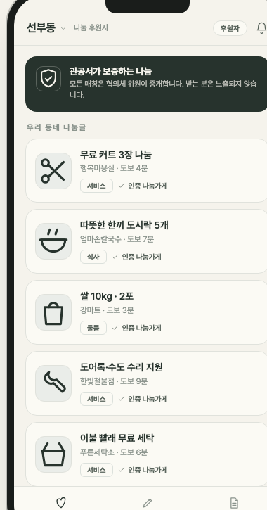
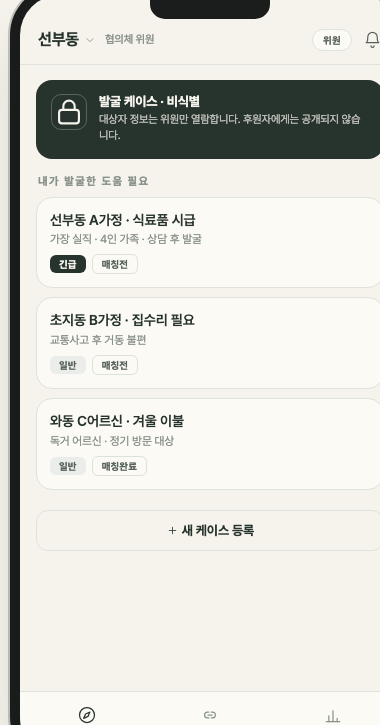
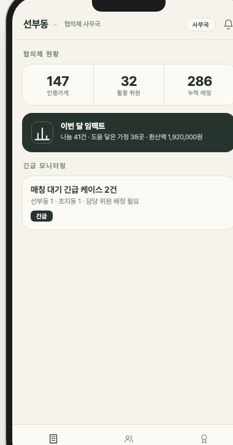

도움이 필요한 이웃이 스스로 손을 들지 않아도,
선부3동지사협위원의 발굴이 헛되지 않도록.
이음은 그 사이에 놓는 다리입니다.
당근마켓이 사고파는 곳이라면,
이음은 나누고 닿게 하는 곳.
그리고 그 사이를
협의체가 지켜주는 곳입니다. — 이음(理音) 한 줄 컨셉
갑작스러운 실직, 사고, 병환. 위기 가정은 서류가 아니라 골목에 있습니다. 결국 처음 알아차리는 사람은 언제나 선부3동지사협위원입니다.
창피함과 자존심. "도와주세요"는 세상에서 가장 어려운 말입니다. 도움이 필요한 사람일수록 손을 들지 못합니다.
동네 슈퍼, 식당, 미용실, 철물점. 도와주고 싶은 마음은 이미 골목에 있는데, 누구에게 어떻게 전할지 아무도 모릅니다.
선부3동지사협위원이 상담으로 찾은 필요를 '선부3동 A가정'처럼 이름 없이 등록합니다.
인증 나눔가게가 미리 내놓은 물품·서비스에서 선부3동지사협위원이 딱 맞는 것을 골라 매칭합니다.
당사자는 앱에 등장하지 않습니다. 선부3동지사협위원과 후원자가 조용히 전달합니다.
완성된 시스템을 강요하지 않습니다.
선부3동지사협위원 여러분과 함께 다듬어 갈,
작은 파일럿으로 시작하고자 합니다.
협의체와 요구사항 최종 조율 후 개발 착수
후원자·위원·사무국 핵심 화면을 2개월 집중 개발
선부3동 지역사회보장협의체 위원 중심 실사용 검증
인증 나눔가게 오픈 · 첫 정식 매칭 개시

동네 슈퍼·식당·미용실이
선의를 손쉽게 내놓습니다.

발굴한 필요를 비식별로 담고
딱 맞는 나눔과 매칭합니다.

인증 나눔가게와 선부3동지사협위원 활동이
한눈에 보이고 관리됩니다.